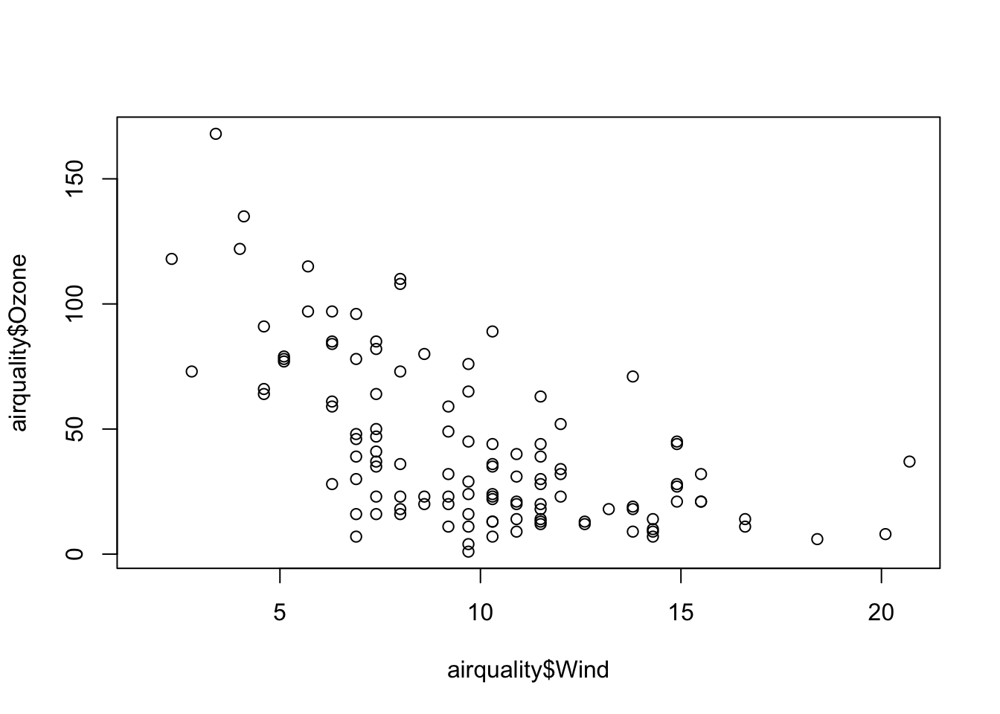
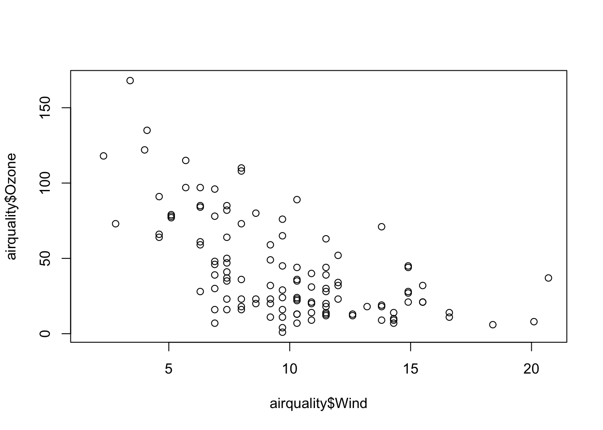

data(airquality)
plot(airquality$Ozone ~ airquality$Wind)
An article about computational results is advertising, not scholarship. The actual scholarship is the full software environment, code and data, that produced the result. —Claerbout and Karrenbach (1992)
[Link to Claerbout and Karrenbach (1992) article]
“When writing code, you’re always collaborating with future-you; and past-you doesn’t respond to emails”. —Hadley Wickham
[Source]
Material for this chapter was borrowed and adopted from
At the end of this lesson you will:
This chapter will be about reproducible reporting, and I want to take the opportunity to cover some basic concepts and ideas that are related to reproducible reporting, just in case you have not heard about it or do not know what it is.
Before we get to reproducibility, we need to cover a little background with respect to how science works (even if you are not a scientist, this is important).
The ultimate standard in strengthening scientific evidence is replication. Assume you claim that X causes Y, or that Vitamin C improves disease. The goal of replication is to have independent people to do independent things with different data, different methods, and different laboratories and see if they get the same result.
There is a sense that if a relationship in nature is truly there, then it should be robust to having different people discover it in different ways. Replication is particularly important in areas where findings can have big policy impacts or can influence regulatory types of decisions.
There is really nothing wrong with it. This is what science has been doing for a long time, through hundreds of years. And there is nothing wrong with it today.
But the problem is that it is becoming more and more challenging to do replication or to replicate other studies.
Here are some reasons:
There are a lot of good reasons why you cannot replicate a study. If you cannot replicate a study, is the alternative just to do nothing (?? 😱), just let that study stand by itself?
The idea behind a reproducible reporting is to create a kind of minimum standard (or a middle ground) where we will not be replicating a study, but maybe we can do something in between. What can we do that’s in between the gold standard and doing nothing?
That is where reproducibility comes in. That’s how we can kind of bridge the gap between replication and nothing.
In non-research settings, often full replication is not even the point. Often the goal is to preserve something to the point where anybody in an organization can repeat what you did (for example, after you leave the organization).
Let’s first define reproducibility. The basic idea is that you need to make the data available for the original study and the computational methods available so that other people can look at your data and run the kind of analysis that you have run, and come to the same findings that you found.
What reproducible reporting is about is a validation of the data analysis (not the original question itself). Because you are not collecting independent data using independent methods, it is a little bit more difficult to validate the scientific question itself. But if you can take someone’s data and reproduce their findings, then you can, in some sense, validate the data analysis.
In this way, you can at least have confidence that you can reproduce the analysis.
Recently, there has been a lot of discussion of reproducibility in the media and in the scientific literature. For example, he journal Science had a special issue on reproducibility and data replication.
Here is an example. In 2012, a feature on the TV show 60 minutes looked at a major incident at Duke University where many results involving a promising cancer test were found to be not reproducible. This led to a number of studies and clinical trials having to be stopped, followed by an investigation which is still ongoing.
[Source on YouTube]
What are the different kinds of reproducible research? Enabling reproducibility can be complicated, but by separating out some of the levels and degrees of reproducibility the problem can become more manageable because we can focus our efforts on what best suits our specific scientific domain. Victoria Stodden (2014), a prominent scholar on this topic, has identified some useful distinctions in reproducible research:
[Source]
What do we need for computational reproducibility? There are a variety of ways to talk about this, but one basic definition that we hae come up with is that there are four things that are required to make results reproducible:
What is driving this need for a “reproducibility middle ground” between replication and doing nothing?
For starters, there are a lot of new technologies on the scene and in many different fields of study including, biology, chemistry and environmental science. These technologies allow us to collect data at a much higher throughput so we end up with these very complex and very high dimensional data sets.
These datasets can be collected almost instantaneously compared to even just ten years ago—the technology has allowed us to create huge data sets at essentially the touch of a button. Furthermore, we the computing power to take existing (already huge) databases and merge them into even bigger and bigger databases. Finally, the massive increase in computing power has allowed us to implement more sophisticated and complex analysis routines.
The analyses themselves, the models that we fit and the algorithms that we run, are much much more complicated than they used to be. Having a basic understanding of these algorithms is difficult, even for a sophisticated person, and it is almost impossible to describe these algorithms with words alone.
Understanding what someone did in a data analysis now requires looking at code and scrutinizing the computer programs that people used.
The bottom line with all these different trends is that for every field “X”, there is now “Computational X”. There’s computational biology, computational astronomy—whatever it is you want, there is a computational version of it.
One basic idea to make writing reproducible reports easier is what’s known as literate statistical programming (or sometimes called literate statistical practice). This comes from the idea of literate programming in the area of writing computer programs.
The idea is to think of a report or a publication as a stream of text and code.
There might also be presentation code that formats tables and figures and there’s article text that explains what’s going on around all this code. This stream of text and code is a literate statistical program or a literate statistical analysis.
Literate programs by themselves are a bit difficult to work with, but they can be processed in two important ways.
Literate programs can be weaved to produce human readable documents like PDFs or HTML web pages, and they can tangled to produce machine-readable “documents”, or in other words, machine readable code.
The basic idea behind literate programming in order to generate the different kinds of output you might need, you only need a single source document—you can weave and tangle to get the rest.
In order to use a system like this you need a documentational language, that’s human readable, and you need a programming language that’s machine readable (or can be compiled/interpreted into something that’s machine readable).
A common choice for literate programming with R code is to build documents based on Markdown language. A markdown file is a plain text file that is typically given the extension .md.. The rmarkdown R package takes a R Markdown file (.Rmd) and weaves together R code chunks like this:
```{r plot1, height=4, width=5, eval=FALSE, echo=TRUE}
data(airquality)
plot(airquality$Ozone ~ airquality$Wind)
```The best resource for learning about R Markdown this by Yihui Xie, J. J. Allaire, and Garrett Grolemund:
The R Markdown Cookbook by Yihui Xie, Christophe Dervieux, and Emily Riederer is really good too:
The authors of the 2nd book describe the motivation for the 2nd book as:
“However, we have received comments from our readers and publisher that it would be beneficial to provide more practical and relatively short examples to show the interesting and useful usage of R Markdown, because it can be daunting to find out how to achieve a certain task from the aforementioned reference book (put another way, that book is too dry to read). As a result, this cookbook was born.”
Because this is chapter is built in a .qmd file (which is very similar to a .Rmd file), let’s demonstrate how this work. I am going to change eval=FALSE to eval=TRUE.
data(airquality)
plot(airquality$Ozone ~ airquality$Wind)
Before we leave this section, I find that there is quite a bit of terminology to understand the magic behind rmarkdown that can be confusing, so let’s break it down:
.md. It is completely independent from R.markdown (R package). markdown is an R package which converts .md files into HTML. It is no longer recommended for use has been surpassed by rmarkdown (discussed below)..Rmd.rmarkdown (R package). The R package rmarkdown is a library that uses pandoc to process and convert .Rmd files into a number of different formats. This core function is rmarkdown::render(). Note: this package only deals with the markdown language. If the input file is e.g. .Rhtml or .Rnw, then you need to use knitr prior to calling pandoc (see below).Check out the R Markdown Quick Tour for more:

One of the alternative that has come up in recent times is something called knitr.
knitr package for R takes a lot of these ideas of literate programming and updates and improves upon them.knitr still uses R as its programming language, but it allows you to mix other programming languages in.knitr was developed by Yihui Xie while he was a graduate student at Iowa State and it has become a very popular package for writing literate statistical programs.Knitr takes a plain text document with embedded code, executes the code and ‘knits’ the results back into the document.
For for example, it converts
.Rmd) file into a standard markdown file (.md).Rnw (Sweave) file into to .tex format..Rhtml file into to .html.The core function is knitr::knit() and by default this will look at the input document and try and guess what type it is e.g. Rnw, Rmd etc.
This core function performs three roles:
.Rmd, the output render marks up the output of code evaluation in .md format.
[Source]
As seen in the figure above, from there pandoc is used to convert e.g. a .md file into many other types of file formats into a .html, etc.
So in summary:
“R Markdown stands on the shoulders of knitr and Pandoc. The former executes the computer code embedded in Markdown, and converts R Markdown to Markdown. The latter renders Markdown to the output format you want (such as PDF, HTML, Word, and so on).”
[Source]
When creating your first R Markdown document, in RStudio you can
Go to File > New File > R Markdown…
Feel free to edit the Title
Make sure to select “Default Output Format” to be HTML
Click “OK”. RStudio creates the R Markdown document and places some boilerplate text in there just so you can see how things are setup.
Click the “Knit” button (or go to File > Knit Document) to make sure you can create the HTML output
If you successfully knit your first R Markdown document, then congratulations!

Here are shortcuts and tips on efficiently using RStudio to improve how you write code.
If you want to run a code chunk:
command + Enter on Mac
Ctrl + Enter on WindowsTo insert a comment:
command + Shift + C on Mac
Ctrl + Shift + C on WindowsThis shortcut can be used both for:
# at the beginning of the line<!-- and --> around the textNote that if you want to comment more than one line, select all the lines you want to comment then use the shortcut. If you want to uncomment a comment, apply the same shortcut.
You can knit R Markdown documents by using this shortcut:
command + Shift + K on Mac
Ctrl + Shift + K on WindowsCode snippets is usually a few characters long and is used as a shortcut to insert a common piece of code. You simply type a few characters then press Tab and it will complete your code with a larger code. Tab is then used again to navigate through the code where customization is required. For instance, if you type fun then press Tab, it will auto-complete the code with the required code to create a function:
name <- function(variables) {
}Pressing Tab again will jump through the placeholders for you to edit it. So you can first edit the name of the function, then the variables and finally the code inside the function (try by yourself!).
There are many code snippets by default in RStudio. Here are the code snippets I use most often:
lib to call library()library(package)mat to create a matrixmatrix(data, nrow = rows, ncol = cols)if, el, and ei to create conditional expressions such as if() {}, else {} and else if () {}if (condition) {
}
else {
}
else if (condition) {
}fun to create a functionname <- function(variables) {
}for to create for loopsfor (variable in vector) {
}ts to insert a comment with the current date and time (useful if you have very long code and share it with others so they see when it has been edited)# Tue Jan 21 20:20:14 2020 ------------------------------You can see all default code snippets and add yours by clicking on Tools > Global Options… > Code (left sidebar) > Edit Snippets…
In R Markdown, when creating an ordered list such as this one:
Instead of bothering with the numbers and typing
1. Item 1
2. Item 2
3. Item 3you can simply type
1. Item 1
1. Item 2
1. Item 3for the exact same result (try it yourself or check the code of this article!). This way you do not need to bother which number is next when creating a new item.
To go even further, any numeric will actually render the same result as long as the first item is the number you want to start from. For example, you could type:
1. Item 1
7. Item 2
3. Item 3which renders
However, I suggest always using the number you want to start from for all items because if you move one item at the top, the list will start with this new number. For instance, if we move 7. Item 2 from the previous list at the top, the list becomes:
7. Item 2
1. Item 1
3. Item 3which incorrectly renders
When editing R Markdown documents, you will need to insert a new R code chunk many times. The following shortcuts will make your life easier:
command + option + I on Mac (or command + alt + I depending on your keyboard)
Ctrl + ALT + I on WindowsA clear and readable code is always easier and faster to read (and look more professional when sharing it to collaborators). To automatically apply the most common coding guidelines such as white spaces, indents, etc., use:
cmd + Shift + A on Mac
Ctrl + Shift + A on WindowsSo for example the following code which does not respect the guidelines (and which is not easy to read):
1+1
for(i in 1:10){if(!i%%2){next}
print(i)
}becomes much more neat and readable:
1 + 1
for (i in 1:10) {
if (!i %% 2) {
next
}
print(i)
}RStudio addins are extensions which provide a simple mechanism for executing advanced R functions from within RStudio. In simpler words, when executing an addin (by clicking a button in the Addins menu), the corresponding code is executed without you having to write the code. RStudio addins have the advantage that they allow you to execute complex and advanced code much more easily than if you would have to write it yourself.
For more information about RStudio addins, check out:
Similar to many other programs, you can also use:
command + Shift + N on Mac and Ctrl + Shift + N on Windows to open a new R Scriptcommand + S on Mac and Ctrl + S on Windows to save your current script or R Markdown documentCheck out Tools –> Keyboard Shortcuts Help to see a long list of these shortcuts.
sessionInfo()R version 4.3.1 (2023-06-16)
Platform: aarch64-apple-darwin20 (64-bit)
Running under: macOS Sonoma 14.0
Matrix products: default
BLAS: /Library/Frameworks/R.framework/Versions/4.3-arm64/Resources/lib/libRblas.0.dylib
LAPACK: /Library/Frameworks/R.framework/Versions/4.3-arm64/Resources/lib/libRlapack.dylib; LAPACK version 3.11.0
locale:
[1] en_US.UTF-8/en_US.UTF-8/en_US.UTF-8/C/en_US.UTF-8/en_US.UTF-8
time zone: America/New_York
tzcode source: internal
attached base packages:
[1] stats graphics grDevices utils datasets methods base
loaded via a namespace (and not attached):
[1] vctrs_0.6.4 cli_3.6.1 knitr_1.44 rlang_1.1.1
[5] xfun_0.40 emojifont_0.5.5 showtextdb_3.0 sysfonts_0.8.8
[9] generics_0.1.3 proto_1.0.0 jsonlite_1.8.7 glue_1.6.2
[13] colorspace_2.1-0 htmltools_0.5.6.1 scales_1.2.1 fansi_1.0.5
[17] rmarkdown_2.25 grid_4.3.1 evaluate_0.22 munsell_0.5.0
[21] tibble_3.2.1 fastmap_1.1.1 yaml_2.3.7 lifecycle_1.0.3
[25] compiler_4.3.1 dplyr_1.1.3 pkgconfig_2.0.3 htmlwidgets_1.6.2
[29] rstudioapi_0.15.0 digest_0.6.33 R6_2.5.1 tidyselect_1.2.0
[33] utf8_1.2.4 showtext_0.9-6 pillar_1.9.0 magrittr_2.0.3
[37] tools_4.3.1 gtable_0.3.4 ggplot2_3.4.4